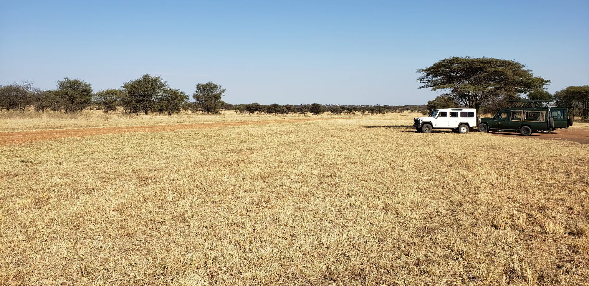
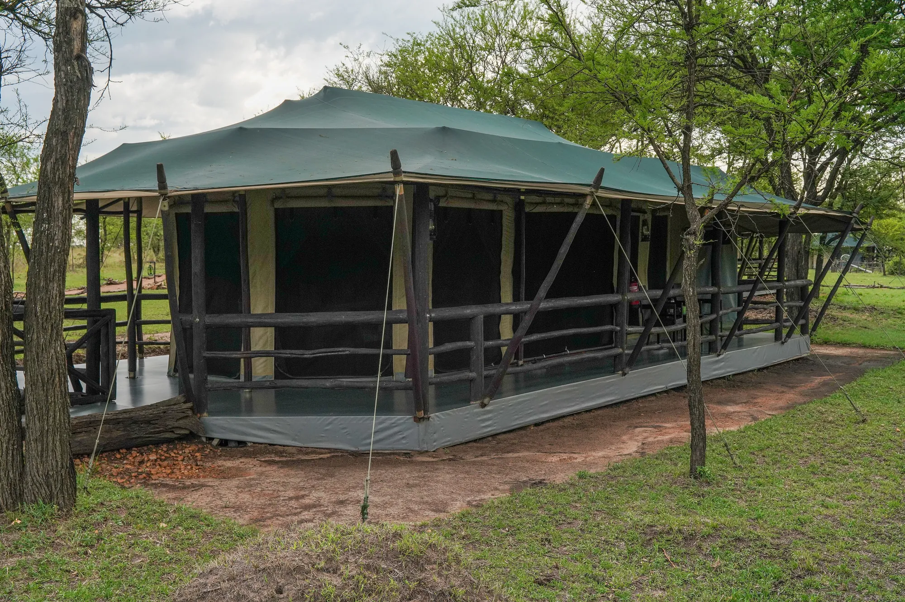
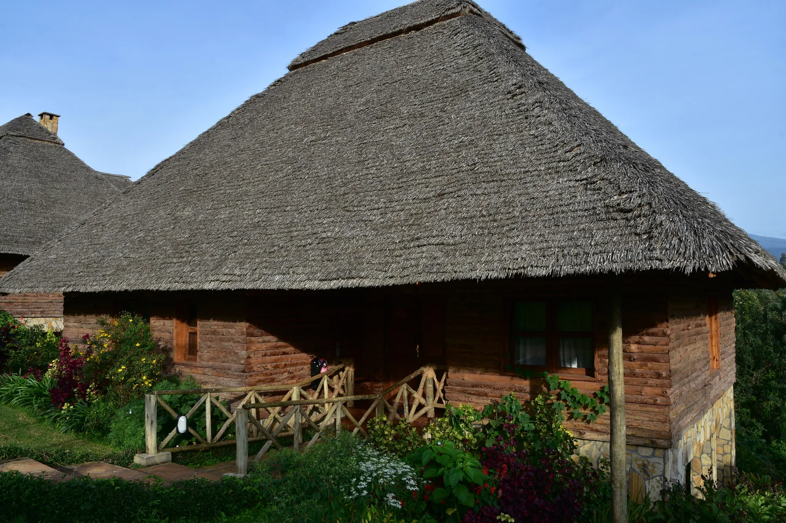
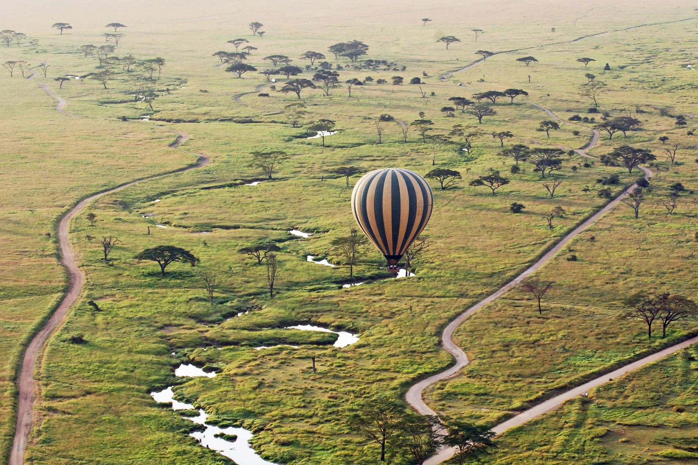
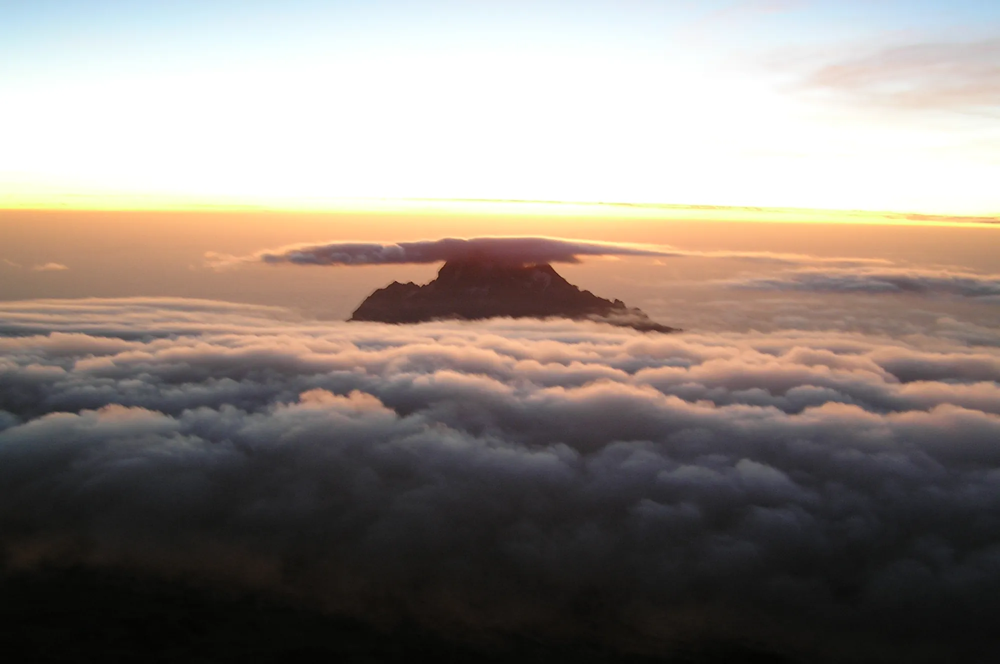
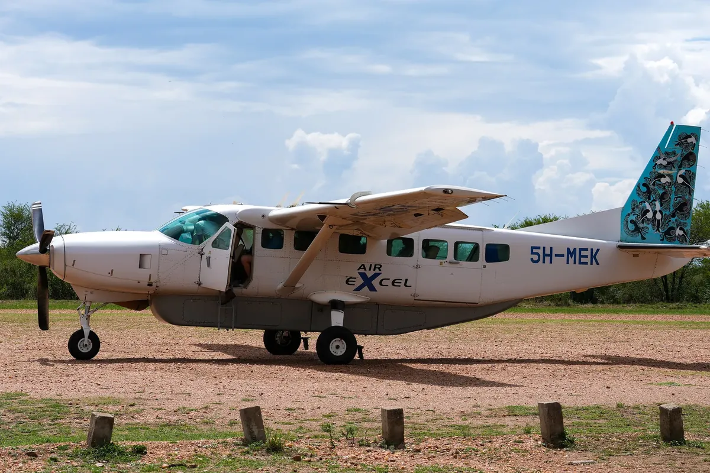
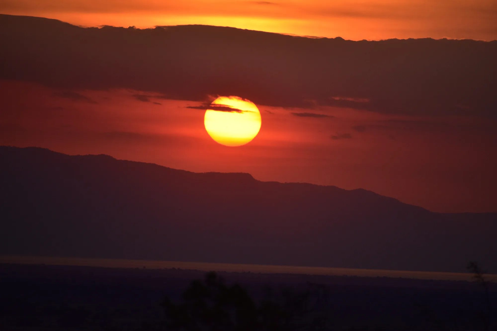

الهجرة الكبرى
مخيّمان متنقّلان يتبعان القطعان، يوم كامل في قاع فوهة نجورونجورو، ومنطاد عند الفجر فوق عبور الأنهار. التنقل بين المخيمات بالطائرة.
ابتداءً من 29,500 ر.ستغادر بعد العشاء. وحين تنفتح الغيوم، تكون الأرض تحتك تنزانيا.
خمس ساعات جنوباً، تخفّ الغيوم وتحمرّ الأرض.
توقف واحد في كليمنجارو، ثم طائرة صغيرة فوق السهول. والغداء يُقدَّم تحت شجرة السمر.
هذا هو اليوم، كما ستراه بعينيك.
تابع الرحلةفي كليمنجارو تمشي من الطائرة الكبيرة إلى طائرة سيسنا كارافان. اثنا عشر مقعداً، طيار واحد، ونافذة لكل مسافر. يُغلق الباب، وتنبسط السهول تحت الجناح، وترى ظلّ الطائرة يعبر العشب.
أربعة عشر ألف كيلومتر مربع من العشب وشجر السمر، بلا سياج من أي جهة. من هذا الارتفاع تستطيع أن تعدّ قطعان النو. يميل الطيار مرة واحدة، فيظهر المهبط خطاً أحمر في الخضرة.


لا صالة ولا طابور. مرشدك واقف بجانب لاند كروزر سقفها مرفوع مسبقاً وفي صندوقها ماء بارد. تُوضع الحقائب في الخلف، تصعد، وتبدأ أول جولة سفاري في الطريق إلى المخيم.
أنت تتوقف. هو لا يتوقف. الأسد يسلك الطريق الترابي لأنه أسهل من العشب، فيمرّ على بعد متر من الباب دون أن يرفع رأسه. المحرك مطفأ، وصوت المرشد خافت، ولا أحد يمدّ يده إلى هاتفه حتى يبتعد.
في موسم الهجرة تعبر القطعان الطريق لعشرين دقيقة متواصلة، فتطفئ المحرك وتنتظر. لا أحد ينزعج. إنها أجمل عشرين دقيقة في اليوم.
وسط السيرينجيتي أكبر من قطر، وفيه بضع مئات من السيارات في أكثر الأيام ازدحاماً. مرشدك يعرف الدروب التي لا يسلكها الآخرون. ومعظم اليوم، الغبار الوحيد الذي تراه هو غبارك.
لقطات حقيقية ومسافات حقيقية. في سفاري سمر لا يُطعَم الحيوان ولا يُنادى ولا يُلمَس؛ تتوقف السيارة، يُرفع السقف، وهم من يقرّر كم يقتربون.


مخيم الخيام ليس تخييماً. الجدران من القماش، لكن الأرضية خشب، والسرير سرير حقيقي، والحمّام فيه دشّ ساخن. الفطور على الشرفة، والحمير الوحشية على العشب أمامها، والمطبخ يطهو حلالاً من أول وجبة إلى آخرها.


مستويان في كل رحلة. «الفاخر» يعني مسبحاً فوق تلّ صخري وجناحاً له شرفته الخاصة. و«ما بعد الفاخر» يعني مخيماً خاصاً وطاهياً خاصاً وطائرة خاصة. كلاهما يحفظ مواعيد الصلاة، ويقدّم الحلال، وفيه جناح عائلي ينام فيه الأطفال على بعد بابين منك.
تنتهي جولة العصر حين تغيب الشمس. تُصلّى المغرب في المخيم، والعشاء على الشرفة، ويصمت المولّد في العاشرة حتى لا يبقى من صوت إلا صوت السهل.
لا مدينة على بعد مئة كيلومتر، ولا ضوء إلا ضوء النار. الشاي حلو، والبطانيات تُوزَّع، ومن مكان لا تراه تبدأ الضباع بالنداء.
صلاة الفجر، قهوة، وبطانيات دافئة في السيارة. أول ساعة من الضوء هي ساعة تحرّك القطط الكبيرة، والهواء ما زال يحمل رائحة المطر. تكون هناك في وقتها، وتعود إلى المخيم لفطور ثانٍ في العاشرة.

ساعة في الهواء مع أول الضوء، تنساب فوق قطعان لا ترفع رأسها، ثم فطور يُفرَش حيث تهبط السلّة. مشمول في رحلتين من الخمس، ويستحق كل منبّه مبكر.

تسعون دقيقة في الجو. الجبل يمرّ عن يسارك، والمحيط الهندي ينفتح أمامك، والأرض الحمراء تتحول إلى رمل أبيض قبل أن تنهي قهوتك.

مدينة سواحلية من الحجر المرجاني والأبواب العُمانية، ما زالت العربية تُقرأ فيها على العتبات، ومساجدها أقدم من معظم الدول. القهوة بالهيل، والسوق يفوح بالقرنفل، وستشعر بأنك في بيتك.
الشراع نفسه الذي استخدمه التجار العُمانيون، على الماء نفسه. تخرج في الخامسة وتعود مع المغيب، والفاكهة على المتن، ولا شيء تفعله سوى أن تشاهد الشمس تغيب في البحر.
ثلاث ليالٍ أو أربع في ختام كل رحلة. فيلا بمسبحها الخاص، وشاطئ ينحسر فيه المدّ كيلومتراً كاملاً، وبحر دافئ يكفي للأطفال في السابعة صباحاً.
كل رحلة تشمل الطيران والمخيمات والمرشد والتنقلات والتأشيرة الإلكترونية، بالريال للشخص الواحد. غيّر ما تشاء ونعيد حساب السعر في اليوم نفسه.
مخيّمان متنقّلان يتبعان القطعان، يوم كامل في قاع فوهة نجورونجورو، ومنطاد عند الفجر فوق عبور الأنهار. التنقل بين المخيمات بالطائرة.
ابتداءً من 29,500 ر.س
خمس ليالٍ من جولات السفاري في تارانجيري ووسط السيرينجيتي، ثم رحلة قصيرة بالطائرة إلى الساحل لأربع ليالٍ على شاطئ نونغوي. الرحلة التي تحجزها معظم العائلات أولاً.
ابتداءً من 34,900 ر.س
طائرات صغيرة تنقلك بين ثلاثة مخيمات في جنوب السيرينجيتي وشماله، فيُقضى كل صباح وكل عصر مع الحيوانات لا على الطريق. المنطاد مشمول.
ابتداءً من 38,500 ر.س
جولات قصيرة، أجنحة عائلية مع مسابح، مرشد يحوّل كل جولة إلى حكاية، وثلاثة أيام على البحر في الختام. الأطفال من سن ست سنوات؛ عائلة واحدة حتى ثمانية أفراد.
ابتداءً من 31,500 ر.س للبالغ · الأطفال من 18,900 ر.سمخيم خاص، وطائرة خاصة، وفيلا خاصة على الجزيرة. طاهٍ يطبخ ما نشأت عليه، ولا أحد غيركم في الأفق. حتى عشرة ضيوف.
ابتداءً من 68,000 ر.س
أخبرنا متى تستطيع السفر ومن سيرافقك. نردّ خلال يوم واحد، بالعربية أو الإنجليزية، ببرنامج أولي وسعر.